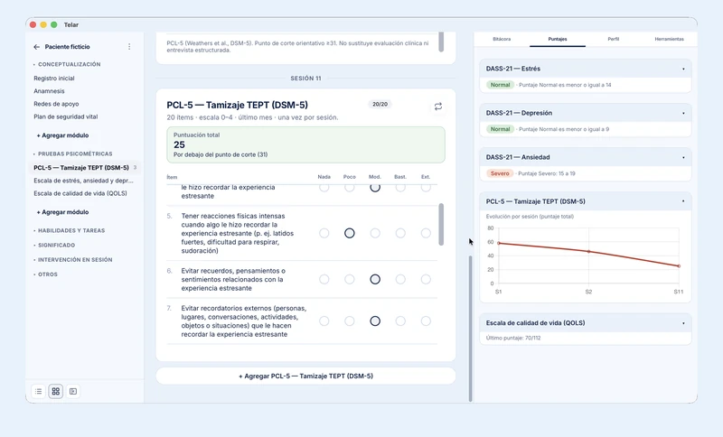
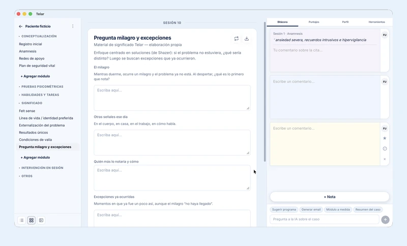
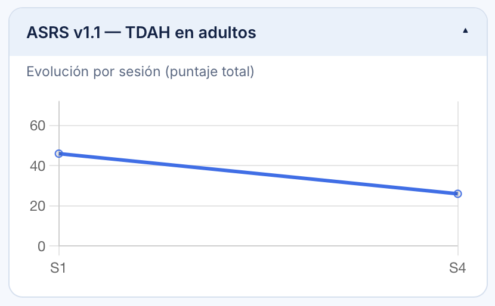
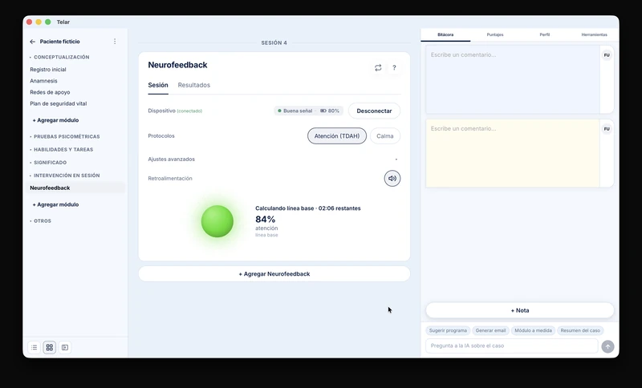

Cómo instalar Telar en macOS y Windows
Descarga, instala y comienza fácilmente a potenciar tu consulta.
Todos Tutorial Práctica clínica Opinión

Descarga, instala y comienza fácilmente a potenciar tu consulta.

Con Telar los datos de tus pacientes son siempre tuyos. Qué implica eso para tu práctica frente a herramientas con IA como ChatGPT o Google NotebookLM.

La plantilla de 8 sesiones, ASRS y GAD-7 puntuadas al instante, y la variante con neurofeedback.

PCL-5, plan de seguridad, estimulación bilateral EMDR-adjacent y neurofeedback protocolo Calma.
No hay artículos en esta categoría todavía.
Plan Demo gratis, hasta 3 pacientes activos (los archivados y en pausa no cuentan). Si prefieres ver el flujo antes, coordinamos una demo breve.